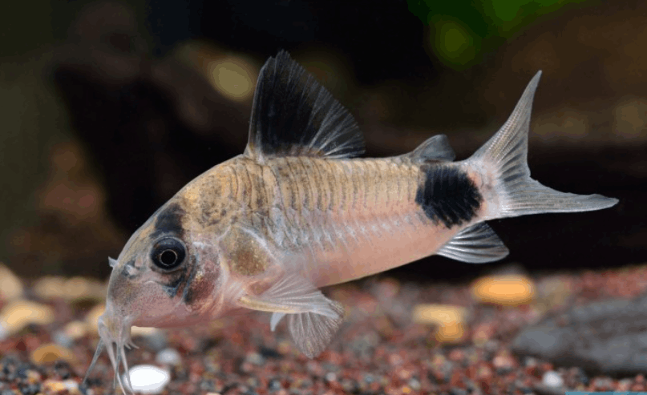

Systématique
- Ordre : Siluriformes
- Famille : Callichthyidae
- Genre : Corydoras
- Espèce : C. panda

Corydoras panda est l'une des espèces les plus populaires du genre Corydoras, décrite par Nijssen et Isbrücker en 1971. Ce petit poisson-chat cuirassé doit son nom à sa coloration caractéristique rappelant le panda géant : un corps beige clair ou blanc cassé, orné d'une tache noire couvrant l'œil, d'une autre sur la nageoire dorsale et d'une troisième sur le pédoncule caudal.
C'est une espèce de taille modeste, les adultes mesurant généralement entre 4 et 5 cm. Comme tous les membres de sa famille, il possède des plaques osseuses protectrices sur les flancs au lieu d'écailles, ainsi que des barbillons sensoriels autour de la bouche pour détecter la nourriture dans le substrat.
Il est capable de respirer l'air atmosphérique grâce à un système vasculaire intestinal modifié, ce qui explique ses remontées rapides et occasionnelles vers la surface ("la pipe").
C'est un poisson strictement grégaire et benthique (vivant au fond). Il est impératif de le maintenir en groupe d'au moins 6 à 8 individus, l'idéal étant un banc d'une dizaine de spécimens pour observer un comportement naturel. Plus le groupe est grand, plus les poissons sont actifs et confiants.
Extrêmement pacifique, il ignore les autres espèces nageant dans les strates supérieures. Il passe la majeure partie de son temps à fouiller le sol avec ses barbillons. Un substrat de sable fin (type sable de Loire ou sable de quartz arrondi) est obligatoire pour ne pas user ou blesser ses barbillons fragiles, ce qui entraînerait des infections bactériennes.
Mode : ovipare.
La reproduction suit le schéma classique des Corydoras avec la position en "T". Le mâle se place perpendiculairement à la femelle pour féconder les œufs qu'elle retient entre ses nageoires pelviennes.
Les œufs, adhésifs, sont ensuite déposés par la femelle sur les vitres de l'aquarium ou sur des plantes à larges feuilles. L'incubation dure environ 4 à 5 jours selon la température. Les alevins de C. panda sont réputés un peu plus sensibles à la qualité de l'eau que ceux d'autres espèces comme C. aeneus.
Dimorphisme sexuel : Le dimorphisme est visible chez les sujets adultes vus du dessus. La femelle est sensiblement plus large et plus ronde au niveau de l'abdomen, surtout en période de reproduction. Le mâle reste plus svelte et est souvent légèrement plus petit.
Espérance de vie : En moyenne 5 à 10 ans dans de bonnes conditions de maintenance.
Il est originaire du haut bassin amazonien au Pérou, plus précisément de la région de Huánuco (Rio Aquas Calientes, un affluent du Rio Pachitea qui rejoint le Rio Ucayali).
Son habitat naturel est constitué de cours d'eau clairs ou d'eaux noires, souvent avec un courant modéré et un fond sablonneux. Provenant de zones proches des contreforts des Andes, les eaux qu'il fréquente sont souvent un peu plus fraîches que celles des grands fleuves amazoniens de plaine.
Répartition

Origine naturelle :
- Amérique du Sud.
- Pérou (Bassin du Rio Ucayali).
- Rio Aquas Calientes.
Paramètres de maintenance
Température : 20 à 25 °C (préfère les eaux légèrement fraîches, éviter les températures > 26°C sur le long terme).
pH : 6,0 à 7,5 (idéalement autour de la neutralité ou légèrement acide).
GH : 2 à 12 °dGH.
Substrat : Sable fin non coupant impératif.
Volume conseillé : Minimum 80 L (environ 80cm de façade) pour offrir une surface au sol suffisante à un groupe.
Régime alimentaire
Régime : omnivore à tendance carnivore/insectivore benthique.
Dans la nature, il se nourrit de vers, de larves d'insectes et de petits crustacés trouvés dans le sédiment.
En aquarium, il accepte les comprimés de fond (tabs), mais nécessite un apport régulier de nourriture vivante ou congelée (vers de vase, tubifex, daphnies) pour une santé optimale. Il ne se contente pas des "déchets" des autres poissons.